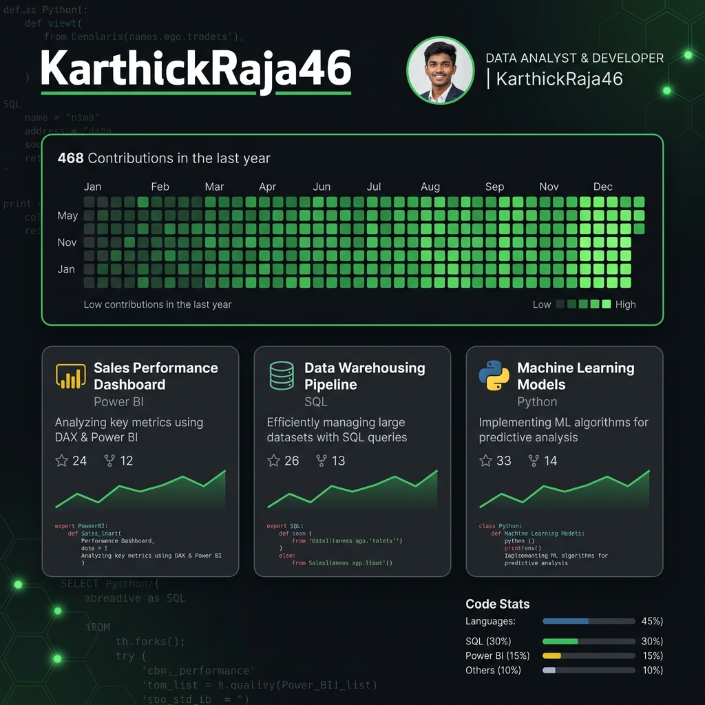

Hi, I'm Karthick Raja
Data Analyst with 6 months of internship experience in Power BI, SQL, Excel, and Business Intelligence. Passionate about transforming raw data into actionable insights through dashboards and analytics.
About Me
CSE Graduate specializing in Data Analytics & Business Intelligence.
I am a Computer Science Engineering graduate with hands-on experience in Data Analytics, Business Intelligence, Power BI, SQL, Python, and Dashboard Development. During my 6-month internship as a Power BI Developer and Data Analyst, I gained practical experience in dashboard development, data visualization, SQL querying, ETL processes, and business reporting.
I enjoy transforming complex datasets into meaningful insights that help organizations make informed decisions. My expertise includes Power BI, SQL, Excel, Python, and data storytelling — with a portfolio of 8+ analytical projects across Banking, Retail, Customer Analytics, and IoT domains.
By the Numbers
Key metrics that define my professional journey so far.
Experience
Projects
Analyzed
Dashboards Built
Certifications
Work Experience
Hands-on professional experience in data analytics and business intelligence.
My Technical Skills
Technologies and tools I use to build analytics, BI dashboards, and data-driven solutions.
My Projects
Click on a project to see more details.
An interactive Power BI dashboard analyzing business performance, customer behavior, revenue trends, profitability, and KPI metrics. Implemented advanced DAX calculations, dynamic filtering, drill-through analysis, and rich data visualizations to support strategic decision-making and performance monitoring.
A Power BI dashboard analyzing sales, profitability, customer behavior, and regional performance across retail operations. Features drill-through reports, KPI cards, dynamic filtering, and time-intelligence calculations to support data-driven business decision-making.
A Power BI dashboard for banking analytics covering customer segmentation, loan performance, deposits, transaction trends, and financial KPIs. Utilized Power Query for ETL, DAX for complex calculations, and advanced data modeling to generate actionable business insights.
An interactive Power BI dashboard analyzing 50,000+ IoT sensor records across industrial machines. Built KPI tracking, anomaly detection, machine health monitoring, and predictive maintenance insights with advanced DAX measures for operational performance analysis.
An interactive Power BI dashboard designed to monitor and analyze SLA, latency, and failure rates from 100K+ API log records. Features real-time monitoring and incident detection capabilities to improve system reliability.

A comprehensive Data Analytics and Business Intelligence portfolio on GitHub, showcasing Power BI dashboards, SQL analytics, Python-based data processing, ETL workflows, KPI reporting, and interactive BI solutions across Banking, Retail, Customer Analytics, and IoT domains.

An end-to-end ETL pipeline for 100K+ API log records with automated validation and data quality checks. Achieved 99.5% data consistency and designed dashboards to analyze SLA, latency, and failure rates with real-time monitoring and incident detection capabilities.

A comprehensive portfolio analysis dashboard built entirely in Microsoft Excel — designed to help investors track performance, visualize trends, and make data-backed decisions. Processes 10,000+ rows with advanced formulas and interactive visualizations.

A machine learning model using MFCC-based audio feature extraction to identify and classify bird species from audio recordings. Trained on multiple bird species and deployed as an interactive Streamlit web application for real-time predictions.

A production-ready full-stack application that leverages LLMs to analyze resumes for ATS compatibility. It scores resumes against Data Analyst role profiles, extracts critical insights from PDFs, and generates intelligent rewrite suggestions.
No projects available for this filter.
Professional Certifications
Verified credentials in data analytics, Business Intelligence, and programming.
My Education
B.E. Computer Science Engineering graduate from Hindusthan Institute of Technology, Coimbatore.
Get in touch
Have a project or job opportunity? Feel free to reach out. I'd love to hear from you.
Ready for Data Analyst & Power BI Roles
Open to full-time opportunities in Data Analytics, Business Intelligence, Power BI Development, and Reporting Analytics. Let's build something impactful together!
Send a Message